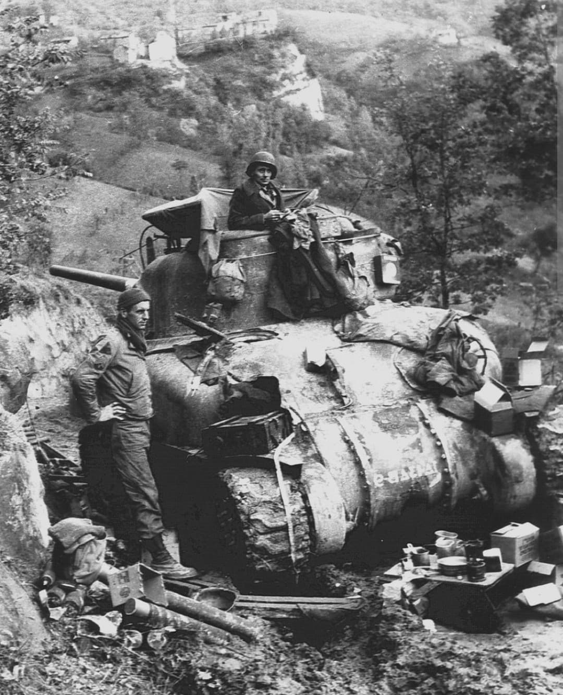
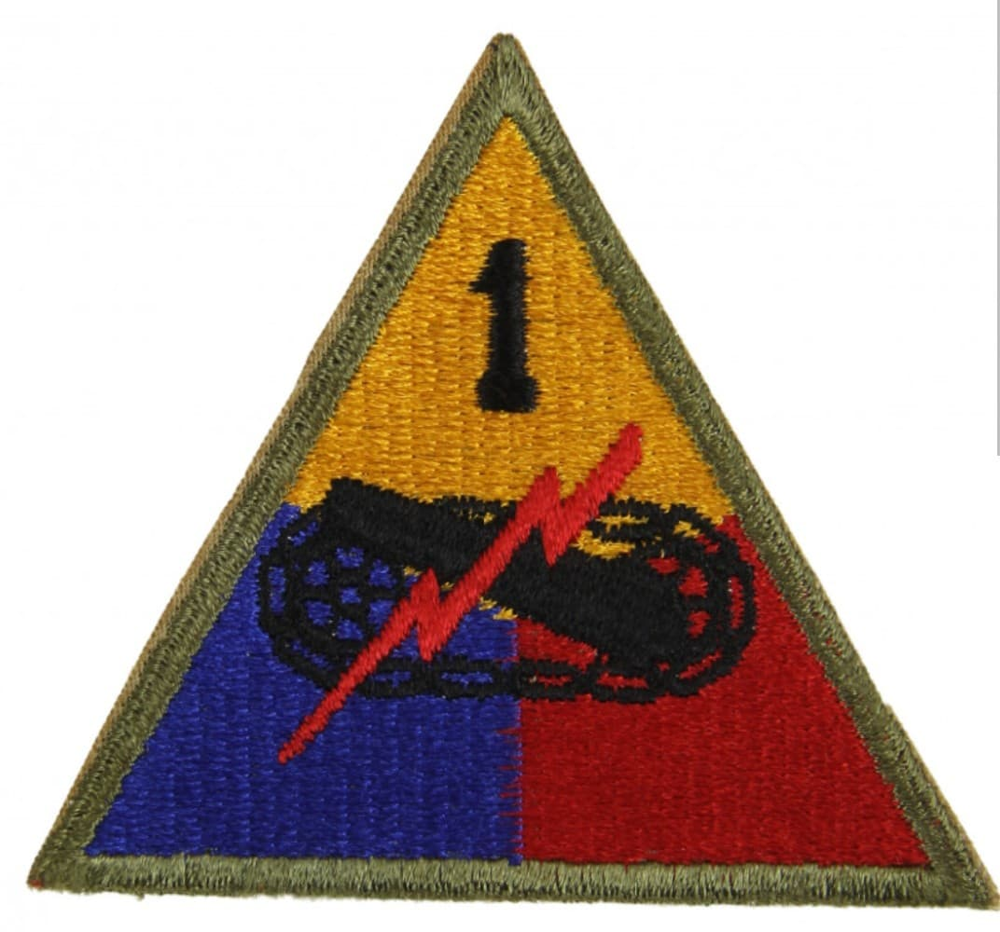
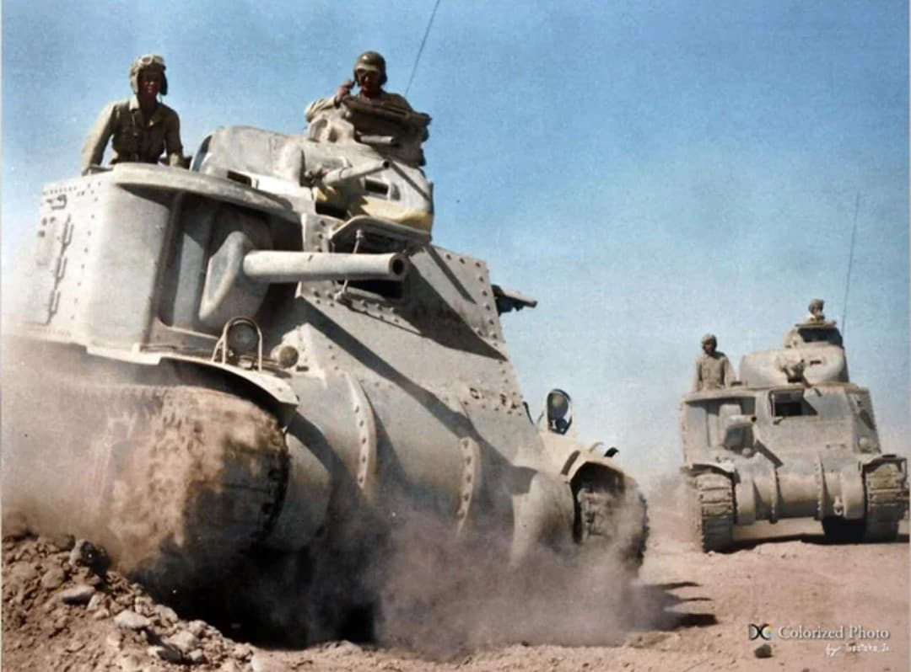

De l'assaut amphibie à Oran à la rude épreuve de Kasserine, la tête de pont d'Anzio et la percée de la ligne Gothique

Surnommée « Old Ironsides », la **1st Armored Division** est la toute première division blindée organisée par l'US Army. Pionnière de la guerre mécanisée américaine, elle a constitué le fer de lance des forces blindées des États-Unis sur le théâtre méditerranéen.
Du débarquement en Afrique du Nord en 1942 jusqu'à la capitulation allemande dans les Alpes italiennes en mai 1945, la division a accumulé plus de 500 jours de combat acharné, façonnant la doctrine blindée moderne des Alliés.
Activée en juillet 1940 à Fort Knox sous le commandement du général Bruce Magruder, la division adopte le surnom Old Ironsides en hommage à la célèbre frégate en bois américaine USS Constitution, réputée invulnérable.
Son insigne triangulaire associe les trois armes de la force blindée : le **jaune** pour la cavalerie, le **bleu** pour l'infanterie et le **rouge** pour l'artillerie. Au centre figurent un canon de char, un chenille noire et un éclair rouge symbolisant la puissance de feu, la mobilité et la rapidité du choc mécanisé, surmontés du chiffre **1**.

Le 8 novembre 1942, la division débarque près d'Oran en Algérie dans le cadre de l'**Opération Torch**. S'enfonçant en Tunisie, la division affronte pour la première fois les unités vétéranes de l'Afrikakorps.
En février 1943, lors de la **bataille de la passe de Kasserine**, les éléments de la 1st Armored subissent un choc brutal face aux attaques de Rommel. Réorganisée et reprise en main sous l'impulsion du général George S. Patton puis du général Ernest N. Harmon, la division se rétablit brillamment, capturant Mateur et participant à la capitulation des forces de l'Axe en Tunisie en mai 1943.

Débarquée à Naples à la fin de l'année 1943, la 1st Armored Division est projetée en janvier 1944 dans la tête de pont d'**Anzio** (*Opération Shingle*). Elle y mène des combats défensifs furieux pendant plusieurs mois avant d'effectuer la percée de mai 1944 et d'être l'une des premières unités à entrer dans **Rome** le 4 juin 1944.
Poursuivant l'ennemi vers le nord dans le relief escarpé des Apennins, la division affronte les fortifications de la **ligne Gothique**. En avril 1945, elle perce enfin dans la plaine du Pô, capture Vérone et coupe la retraite des armées allemandes vers les Alpes jusqu'à la fin des hostilités.
En 507 jours de combat en Afrique du Nord et en Italie, la 1st Armored Division déplore plus de **9 800 pertes au combat** (dont environ 1 900 tués).
Deux de ses hommes ont été décorés de la Medal of Honor. La division a détruit ou capturé des centaines de véhicules blindés ennemis et a fait plus de 41 000 prisonniers de guerre.
Page du Musée HOP WW2 – Section Unités & Divisions Célèbres